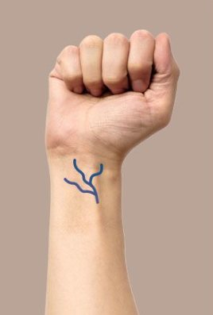
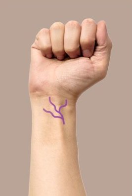

What skin tone do you have?

Cool Tone
Blue or Purple veins
A light skin tone that is not yellow but rather pinkish.

Warm Tone
Dark Green or Olive veins
Yellowish skin tone is a common tone found in Asians.

Neutral Tone
Purplepink and veins mixed together
Medium skin tone is a skin tone that does not have pink or yellow undertones.